Figures
Every figure is produced from the model and its data. Each one has its own description. Nothing is drawn by hand.
Electricity fuel mix of the 28 largest power systems
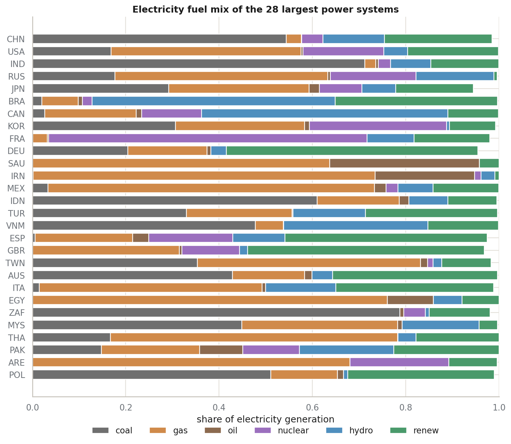
Each bar is one country. The bar shows the share of that country's electricity that comes from each fuel. The countries are ordered by average demand, with the largest at the top. These shares are not estimates. They come from the Energy Institute Statistical Review and from Our World in Data. In the model, this share sets the strength of the link between a fuel supply and its national grid. A country with a high coal share therefore reacts more to a coal supply problem.
How world electricity demand is distributed and concentrated
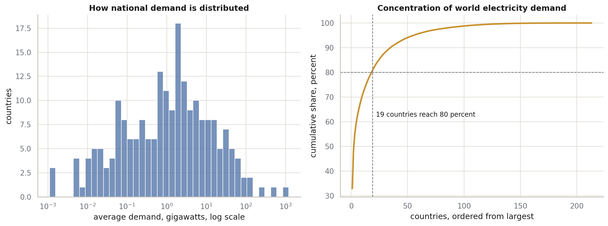
The left panel counts countries by their average electricity demand. The scale is logarithmic because the range is very wide. The right panel adds the countries together, starting with the largest. It shows how few countries hold most of the world demand. This concentration is the reason a change in one large system can move the world total.
The four price series that set market inertia in the model
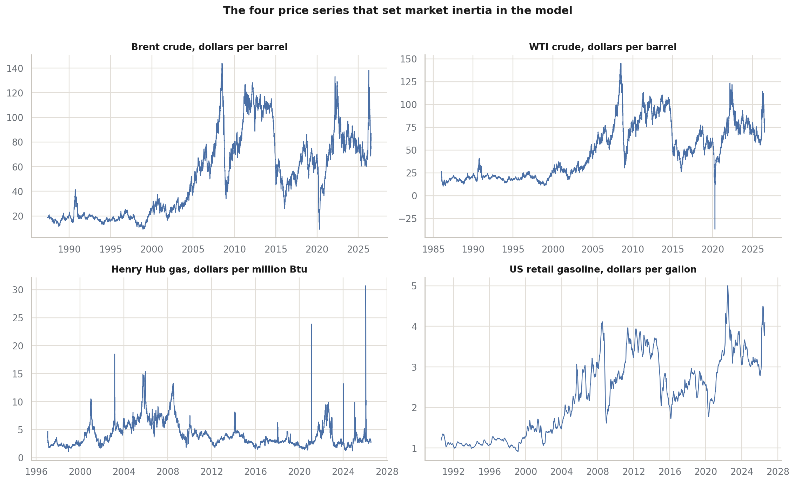
Each panel is one traded price, taken from the Federal Reserve Economic Data service. The model does not use these prices to forecast. It uses their variation. A price that moves a great deal in the record is given a low inertia value, so it reacts quickly in the model. A steady price is given a high inertia value. This is how the real behaviour of each market enters the model.
How strongly each type of node resists change
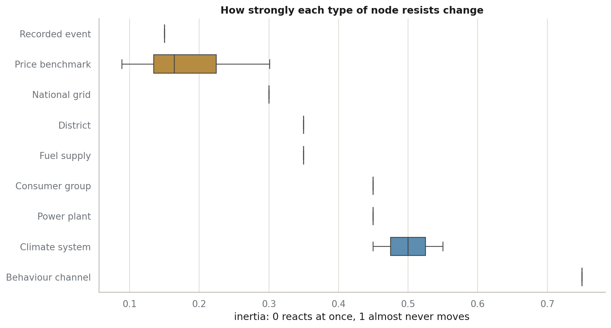
Inertia controls the speed of a node. A recorded event has the lowest inertia because a disaster happens at once. Behaviour channels have the highest inertia because habits change over years. Price benchmarks cover a range, because each one takes its value from its own measured volatility. This single parameter produces the order in which effects arrive across the model.
The structure of the links between nodes
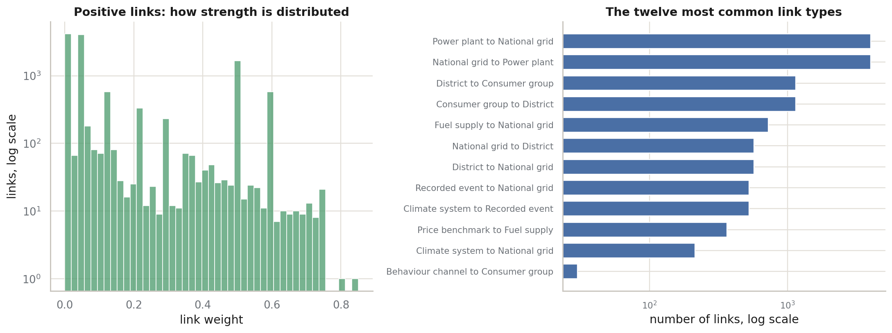
The left panel counts links by their weight. Most links are weak. A small number are strong. This shape is expected, because each node connects strongly to a few neighbours and weakly to many others. The right panel shows which pairs of node types are joined most often. The model contains 13,826 links in total, of which 1,142 are negative. A negative link carries relief rather than stress.
Where each change lands, by node type
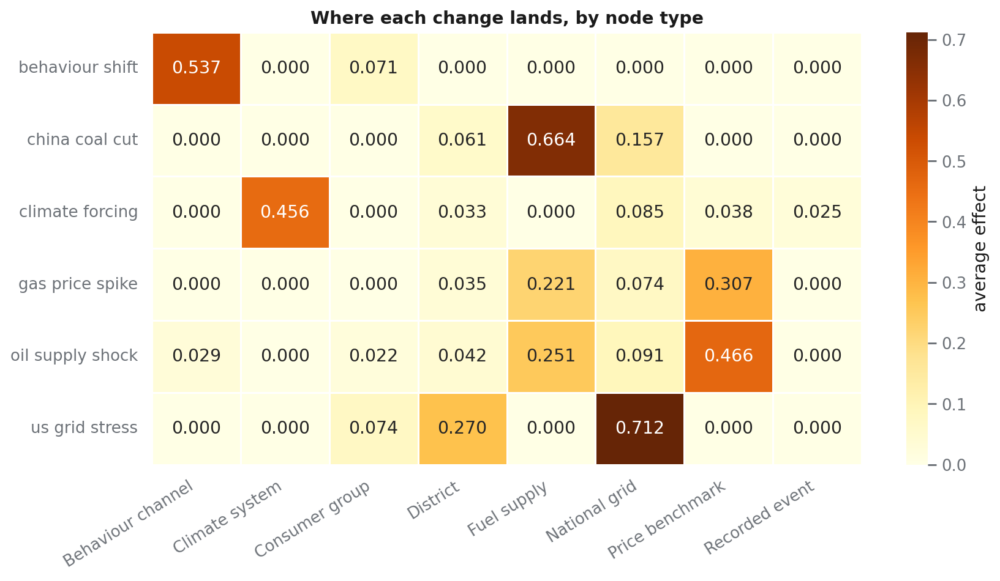
Each row is one change applied to the model. Each column is a type of node. The number is the average effect on the nodes of that type that changed. An empty cell means the change did not reach that type. The climate change reaches the widest set of types, because the climate connects to every country. A single national change stays close to its own country.
Order of arrival after a large oil supply loss
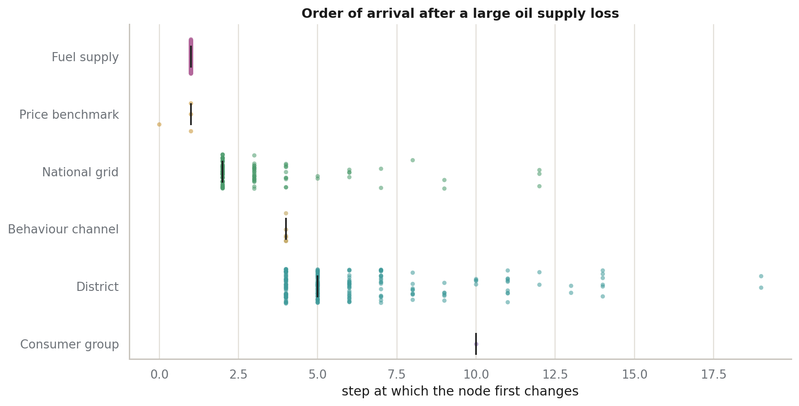
Each dot is one node that changed. Its position shows the step at which it first moved. The black bar marks the middle value for that type. Prices move first, in one step. Fuel supplies follow, then grids, then districts, then consumers. The model therefore reproduces the expected order: a market signal travels before a physical effect.
The model saturates rather than growing without limit
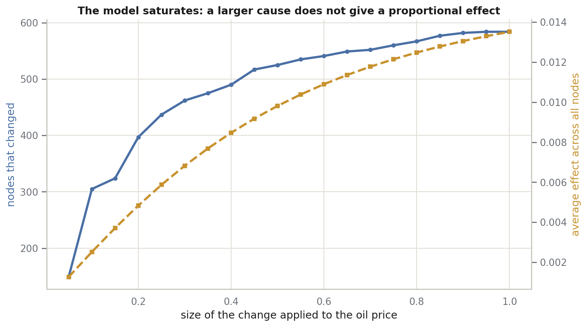
The change applied to the oil price is increased in steps from a small value to the maximum. The blue line counts how many nodes changed. The gold line gives the average size of the effect. Both lines bend and flatten. This is the effect of the limit function in the calculation. A real system behaves in the same way: a price cannot rise without end, and a grid cannot fail more than completely.
System size against low carbon share
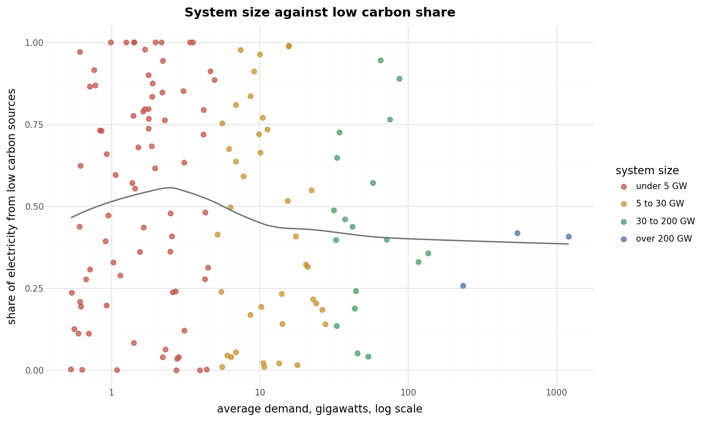
Each point is one country. The horizontal position is the size of its power system. The vertical position is the share of its electricity that comes from nuclear, hydro or other renewable sources. The grey line is a smoothed trend. The plot shows that size alone does not decide the low carbon share. Small systems occupy the full range, because a single large hydro station can supply most of a small country.
United States power plants in the model
Every point is one power plant that the model contains. The position is the plant's recorded coordinate, taken from the bulk archive of the Energy Information Administration. The model holds 4,000 of the 15,247 located plants by default. This map confirms that the station layer follows the real pattern of United States generation, with dense clusters along the Gulf coast, the Ohio valley and the coasts. Open the html file to pan, zoom and read plant names.
The two climate series that set the state of the model
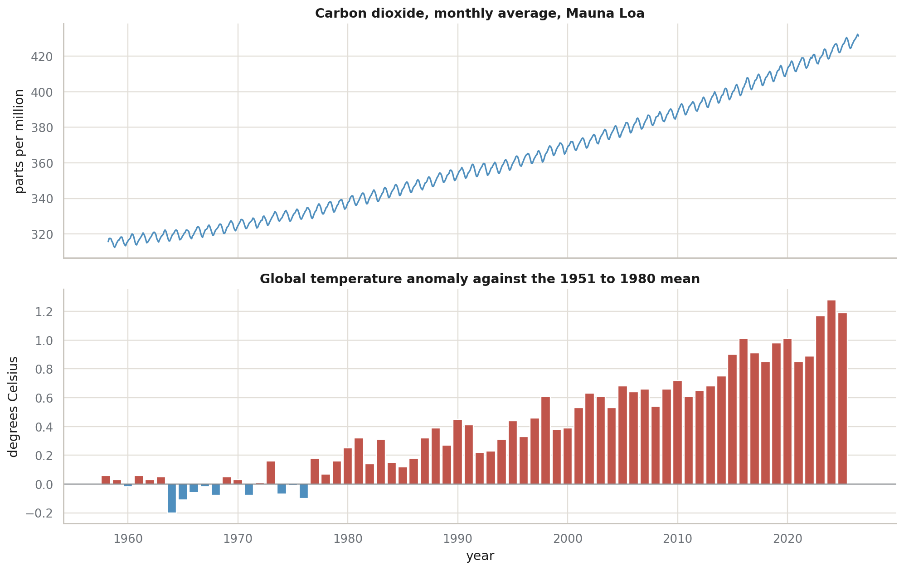
The upper panel is the carbon dioxide record from Mauna Loa. The saw pattern is the growing season of the northern hemisphere. The lower panel is the global temperature anomaly. Both series are read directly into the model. They set the starting state of the two climate nodes. The climate nodes then connect to every national grid, and to the gas and electricity prices, through heating and cooling demand.
Recorded disasters that the model contains
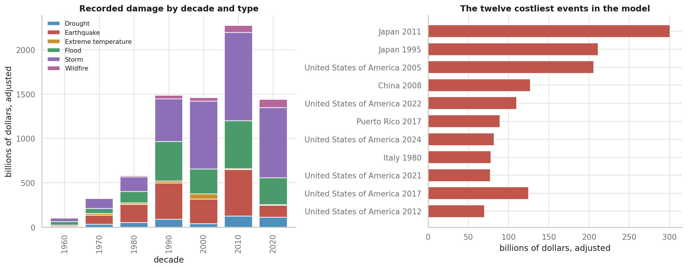
The left panel adds the adjusted damage of every energy relevant disaster in each decade, and separates the total by disaster type. The right panel names the twelve costliest single events. These records come from the international disaster database. In the model, each event is a node. The recorded damage sets the strength of the link from that event to the national grid of the country it struck.
Every node names its source
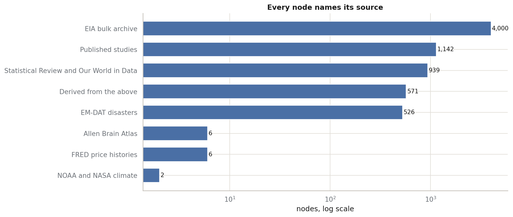
The model records where each node came from. This chart counts the nodes by source. The largest group is the plant list from the bulk archive of the Energy Information Administration. The group marked as published studies holds the consumer response values. These values are the only assumed parameters in the model, and they are labelled so that a reader can find them.
Method
Statistical panels use matplotlib and seaborn. The grammar of graphics panel uses plotnine. The interactive map uses plotly. Each figure names its method above the title.